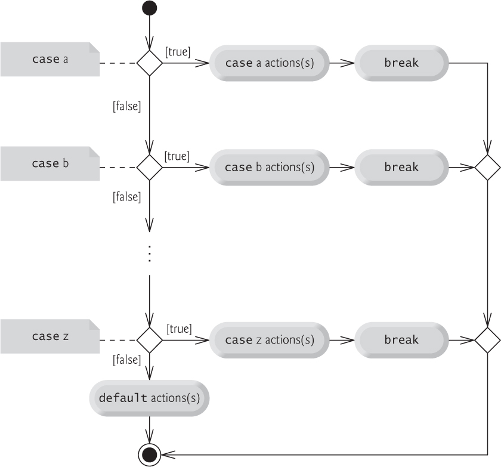
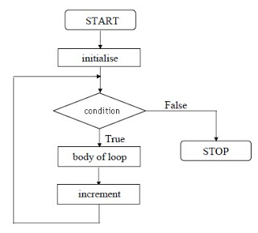

### Javascript * Created by Brendan Eich at Netscape in 1995 * The programming language of the Browser * Dynamic language, loosely typed
### Relationship with Java? ** No Relationship, except for a little bit similarity of syntax.**
### How to run Javascript code * chrome developer tool -> console * firefox developer tool -> Scratchpad * NodeJs REPL (read–eval–print loop) * IDE/editor integration
### Declare variables use `var` to declare a variable ``` var a,b,c,d,e; a = 1; b = true; c = 'hello'; d = { attr1: val1; attr2: val2 }; e = function(){ ... }; f = [1, 2, 'abc'] ``` *not declare with var will result in a global variable*
### define functions use keyword `function` to define functions ``` function factorial(n){ if (n == 1){ return 1 }else{ return n * factorial(n - 1) } } factorial(5) ```
### Comments ``` // single-line comment. /* This is also a comment */ /* * This is yet another comment. * It has multiple lines. */ ```
### Semicolon Certain ECMAScript statements (empty statement, variable statement, expression statement, do-while statement, continue statement, break statement, return statement, and throw statement) must be terminated with semicolons. Such semicolons may always appear explicitly in the source text. For convenience, however, such semicolons may be omitted from the source text in certain situations. [ecma-262 | 5.1 | #sec-7.9](http://www.ecma-international.org/ecma-262/5.1/#sec-7.9)
#### common rules about semicolon auto insertion * Semicolons are only ever inferred before a }, at the end of a line, or at the end of a program. * Semicolons are only ever inferred when the next token cannot be parsed. * Never omit a semicolon before a statement beginning with (, [, +, -, or /. * When concatenating scripts, insert semicolons explicitly between scripts. * Never put a newline before the argument to return, throw, break, continue, ++, or --. * Semicolons are never inferred as separators in the head of a for loop or as empty statements.
### Naming conversions * all identifiers: begin with a letter, _ , or $. Subsequent characters can be letters, digits, underscores, or dollar signs * variable names: `camelCase` * function name: `camelCase`, if the function is supposed to be used with the `new` operator, then capitalize. * any identifier can not be a reserved word
### reserved words Never use reserved words to name things ``` abstract boolean break byte case catch char class const continue debugger default delete do double else enum export extends false final finally float for function goto if implements import in instanceof int interface long native new null package private protected public return short static super switch synchronized this throw throws transient true try typeof var volatile void while with ```
### General Style Guide * 2 spaces – for indentation * Space after keywords `if (condition) { ... }` * Space after function name `function name (arg) { ... }` * Space around Operators ` 1 + 2`
#### More detailed style guide * [airbnb's](https://github.com/airbnb/javascript) * [google's](https://google.github.io/styleguide/jsguide.html) * [JavaScript Standard Style](https://github.com/standard/standard)
### Condition Control Block * if, else statement * switch statement
#### if statement - image 
#### if statement - code use if statement to make decisions depends on conditions ``` if (cond1){ // do something }else{ // do some other things } if (cond1){ // do something }else if (cond2){ // do something }else{ //... } ``` **if statement can also be nested**
#### switch statement - image 
#### switch statement - code ``` switch(n) { case 1: // Start here if n == 1 // Execute code block #1. break; case 2: // Execute code block #2. break; case 3: // Execute code block #3. break; default: // Execute code block #4. break; } ``` **don't forget the `break` statement**
### Loop * for loop * while, do/while
#### for loop ``` for ([initialExpression]; [condition]; [incrementExpression]){ statement } ``` 1. initialExpression: excute before loop start 2. condition: to determin when the loop should finish 3. statement 4. incrementExpression: excute after each loop cycle
#### for loop - diagram 
#### for loop - example ``` var i, sum; sum = 0 for (i = 0 ; i < 10 ; i++){ sum += i; } // sum is 45 ```
#### while loop - syntax ``` while (condition) { // code block to be executed } ``` example ``` var i, sum; i = 0; sum = 0; while (i < 10){ sum += i; i++; } // sum now is 45 ```
#### while loop - diagram <img src="./images/JavaScript-while-loop.png" alt="while loop">
#### do while loop ``` do{ statements }while (expression); ``` similar to while loop, except for the statments are excuted at least once.
#### do while loop - diagram <img src="./images/JavaScript-do-while-loop.png" alt="do while loop">
#### break and continue * break, terminate the loop righ away * continue, stop this cycle, head to next ``` var i, sum; for (i = 0, sum = 0; i < 10; i++){ if (i % 2 == 0) continue; sum += i } // sum is 25 var j, fac; j = fac = 1; while (true){ if (j == 5) break; fac *= j; j++; } // fac is 24 ```
### Data Types * Number: `3, -2.3, 7.5` ... * Boolean: two values, `true` and `false` * Null: only one value, `null` * Undefined: A variable declared but has not been assigned a value has the value `undefined`. * String: ` "abc" , "hello world" ` * Symbol (ES6): `Symbol(42), Symbol('foo')` * Object *except Object, all other data types are primitive*
### typeof | a | typeof a | |------ |-----------| | 15 | number | | false | boolean | | "hello" | string | |undefined | undefined |
### typeof | a | typeof a | |--------- |-----------| | {a: 1} | object | | null | object | | [1, 2, 3] | object | |function (){} | object | | NaN | number |
### Number * JavaScript has a single number type, which is represented as 64-bit floating point * integer: 0, 10, 300, 0xfff09, 1.2e8, 3.5E10 * float point number: 1.2, .6, 3.4 (_float point number is not accurate, try `0.1 + 0.2`_) * range: Number.MIN_VALUE .. Number.MAX_VALUE * infinity: Number.POSITIVE_INFINITY, Number.NEGATIVE_INFINITY *1/0 will not raise error in javascript, instead it returns `Infinity`*
#### Number Operations and Combinations * +, - , *, /, % * Math arithmetic operators: Math.pow, Math.round, Math.ceil, Math.floor, Math.abs, Math.max, Math.min, Math.random, Math.sqrt, Math.exp * comparation: >, <, ===, >=, <=
#### NaN * Not a Number * Produced by failed Math functions or when a function trying to parse a number fails * `Math.sqrt(-1)` * `parseInt("abc")` * `'a' * 10`
#### weird NaN * `typeof NaN` returns `number` * `NaN === NaN` returns `false` *if a!==a, then a is NaN*
### Boolean * Boolean represents a logical entity and can have two values: true, and false * The result of comparation also generates boolean value. eg. `a == 4; b > 9` * values convert to false when used in if condition: `undefined, null, 0, -0, '', NaN`
### Null & undefined * They both indicate absence of value * Null indicates that the value is null * undefined indicates not defined. * `var a; console.log(a)` prints undefined * `var b = {}; console.log(b.age)` prints undefined * functions that have no return value return undefined `function a(){}; a() == undefined` * absence of function parameters `function a(b){ b === undefined}; a()`
### String * literal `'abc'` or `new String('abc')`, prefer literal * string literal can be wrapped in single quotes or double quotes `"hello", 'world'`, prefer single quotes * no character type, use single character string `'a', 'b'` * immutable. `var a = "abc"; a[1] = 'F';` a is still "abc" not "aFc"
### Operations on String I * `length` property return its length * get character by index(0 based): `[], charAt`, eg `var a="abc";` a[1] and a.charAt(1) both return "b" * combine two strings: `+, concat`, `"hi" + " js"` and `"hi".concat(" js")` both produce "hi js" * transformation: `toLowerCase, toUpperCase, toLocaleLowerCase, toLocaleUpperCase, replace`
### Operations on String II * tester: `startsWith, endsWith, search, includes` * substring: `substring, slice` * use `split` to make array `"abc".split("")` => `['a', 'b', 'c']` *more info [String | MDN](https://developer.mozilla.org/en-US/docs/Web/JavaScript/Reference/Global_Objects/String)*
### Object * object literal ``` var empty_object = {}; var stooge = { firstName: 'Jerome', "last-name": "Howard", address: { address1: '1 Howard St', city: 'New York' } }; ``` * created by new operator ``` function Person(firstName, lastName){ this.firstName = firstName; this.lastName = lastName } var mickey = new Person('Mickey', 'Green') ```
#### Retrieval * stooge['last-name'] * stooge.firstName * stooge.address.city
#### Update * stooge['last-name'] = 'Page' * stooge.firstName = 'George' *we will revisit object in future classes*
### Function * in javascript, functions are also objects * define function ``` function add(a, b){ return a + b; } var substract = function(a, b){ return a - b; }; ``` * invoke function ``` add(1, 2); // returns 3 substract(10, 3); // returns 7 ```
#### Parameters * flexible argument amount, when invoked, if: * given parameters are less than defined, the laking one will have undefined value * given parameters are more than defined, redundant parameters are discarded automatically ``` function add(a, b){ return a + b; } add(); // returns NaN add(1); // returns NaN add(1,2); // returns 3 add(1,2,3); // returns 3 ```
#### Parameter's type * there is no limitation on which type can be passed as a parameter. That is to say, any javascript data type can be passed, including function
#### arguments ``` function sum(){ if (arguments.length > 0){ return [].reduce.call(arguments, function(memo, e){ return memo + e; }) } } ``` * arguments is not an array, but array alike * arguments has length property
#### function as parameter - higher order function * function can be passed as an parameter ``` [1,2,3,4].forEach(function(el){ console.log(el); }) // here we pass an anomynous function to // forEach as a parameter ```
#### return value * javascript function can return any type of value using return statement * if a function doesn't have an explicit return value, it returns undefined. * function as return value can form curry and closure.
#### variable scope * Scope in a programming language controls the visibility and lifetimes of variables and parameters ``` var a = 1; function add(a, b){ var m = 100; console.log('a = ' + a); return a + b; } add(5, 6); // a = 5 is printed in the console console.log(m); // ReferenceError: m is not defined ``` * javascript has no block scope ``` function b(){ if (true){ var c = 10; } console.log('c = ' + c); } b(); // c = 10 is printed in the console ```
We will revisit _function_ in the future classes
### Exception Handling - throw * use throw to throw an error ``` function division(dividend, divisor){ if (divisor === 0){ throw 'divisor should not be zero' }else{ return dividend/divisor } } division(10, 0) // error raised ```
### Exception handling - catch * use try/catch/finally block to handle exception * try block - code to be tested if there are any exception thrown * catch - handle exception * finally (optional) - code excuted whether there is exception or not ``` try { tryCode - Block of code to try } catch(err) { catchCode - Block of code to handle errors } finally { finallyCode } ```
#### try/catch/finally example ``` try { division(5, 0); } catch(e) { console.log(e) } try { division(5, 0); } catch(e) { console.log(e); } finally { console.log('done'); } ```
### Array * in javascript, array has the type of *object* * array can have different types of elements * array can also be an element of another array
#### create * literal ``` var arr1 = [1, 2, 3, 'a', 'b'] var arr2 = [3, 'b', ['mc', ed], false, {a: 1}] ``` * created by call `new Array()` ``` var a = new Array(); // [] var b = new Array(5); // an array with length 5, all elements are undefined var c = new Array(5,6); // [5, 6] ```
#### read and write array element ** zero based index ** ``` var a = [1, 2, 3, 4] ``` * read `a[1] // get 2` * write `a[1] = 8 // array now is [1, 8, 3, 4]`
#### add / remove elements from array ``` var a = [1, 2, 3]; var b = ['a', 'b', 'c']; var c = [6, 7, 8]; var d = ['e', 'f', 'g'] ``` * append one element, use push method. eg `a.push(4)`, a now is `[1, 2, 3, 4]` * remove last one, use pop method. eg `b.pop()`, b is now `['a', 'b']` * insert one in the beginning, use unshift method. eg. `c.unshif(5)`, c is now `[5, 6, 7, 8]` * remove one from the beginning, use shift. eg. `d.shift()`, d is now `['f', 'g']`
#### add/remove/replace array element *splice method* ``` array.splice(start[, deleteCount[, item1[, item2[, ...]]]]) ``` examples: ``` var myFish1 = ['angel', 'clown', 'mandarin', 'sturgeon']; myFish1.splice(2, 0, 'drum'); // myFish1 is ["angel", "clown", "drum", "mandarin", "sturgeon"] var myFish2 = ['angel', 'clown', 'drum', 'mandarin', 'sturgeon']; myFish2.splice(3, 1); // myFish2 is ["angel", "clown", "drum", "sturgeon"] var myFish3 = ['angel', 'clown', 'drum', 'sturgeon']; myFish3.splice(2, 1, 'trumpet'); // myFish3 is ["angel", "clown", "trumpet", "sturgeon"] ```
#### array Iterating * `for`, `while` loop ``` var a = [1, 2, 3] var i, length; for (i = 0, length = a.length; i < length; i++){ //get current element by a[i] console.log(a[i]) } ``` * `forEach` method, preferred ``` arr.forEach(function callback(currentValue[, index[, array]]) { //your iterator }[, thisArg]); [1, 2, 3].forEach(function(el, i){ console.log('current element : ' + el); console.log('current index : ' + i); }); ```
#### map ** _map_ method creates a new array with the results of calling a provided function on every element in the calling array. ** ``` arr.map(function callback(currentValue[, index[, array]]) { // Return element for new_array }[, thisArg]) var roots = [1, 4 ,9].map(Math.sqrt); // roots [1, 2, 3]; var double = [1, 2, 3].map(function(el){ return el * 2; }) // double [2, 4, 6] ```
#### reduce ** reduce() method executes a reducer function (that you provide) on each member of the array resulting in a single output value ** ``` arr.reduce(callback[, initialValue]); ``` * callback function takes 4 arguments: 1. accumulator 2. currentValue 3. currentIndex (Optional) 4. array (Optional) ``` [1,2,3,4,5].reduce(function(memo, cv){ return memo + cv; }); // sum, 15 ```
#### other common methods * concat `[1,2].concat([3,4]) // [1,2,3,4]` * reverse `[1,2,3,4].reverse() // [4,3,2,1]` * filter ``` [1,2,3,4,5].filter(function(e){ return e % 2 == 0 }) //returns [2, 4] ``` * join `['h','e','l','l','o'].join('') // 'hello'` * sort `[3,5,2,7,1].sort() // [1,2,3,5,7]`
*more, please refer [Array | MDN](https://developer.mozilla.org/en-US/docs/Web/JavaScript/Reference/Global_Objects/Array)*
### Regular Expression * create * var re = /ab+c/; * var re = new Regex('ab+c') * tester: test() method `/^\d+/.test('123b')` * capture: exec() method ``` /a(\d+)b(\d+)/.exec('a123b987'); // ["a123b987", "123", "987", index: 0, input: "a123b987", groups: undefined] ```
#### common pattern * regular string match itself, eg /abc/ matches string 'abc' * special characters having their own matching pattern * match special characters must use '\' to escape
| Character | meaning | |-------------|---------------------| | ^ | match beginning of string | | $ | match the end of string | | . | match any single character | | * | match the preceding expression 0 or more times | | ? | match the preceding expression 0 or 1 time | | + | matches the preceding expression 1 or more times |
| Character | meaning | |-------------|---------------------| | {n} | match the preceding expression n times| | {n, m} | match the preceding expression n to m times| | {n,} | match the preceding expression at least n times | | [xyz] | matches any one of the characters in the brackets | | [^xyz]| matches anything that is not enclosed in the brackets |
| Character | meaning | |-------------|---------------------| | \d | match a single number digit | | \D | match a non number character| | \b | match a white space character, including space, tab, return, line breaker| | \B | match a non space character | | \w | match word character, number, alphabet, and underscore | | \W | match non word character |
#### String methods accept regex * match * replace * search * split
* [online js tester](https://regex101.com/) * more, visit [Regex | MDN](https://developer.mozilla.org/en-US/docs/Web/JavaScript/Guide/Regular_Expressions)
### Type Coercion * the process to convert value from one type to another * explicit coercion, type casting in some programming language, obviously change one type to antoher * implicit coercion, sometimes not noticable, you even don't realize coercion happens.
### Explicit Coercison * convert to String using `String()` function * convert to Number using `Number()` function * convert to Boolean using `Boolean()` function
#### primitive convert to String * primitive values convert to string naturally ``` String(3.14); // '3.14' String(-3); // '-3' String(10000000000/0.00000000001); // "1e+21" String(null); // 'null' String(undefined); // 'undefined' String(true); // 'true' String(false); // 'false' String(NaN); // 'NaN' ```
#### object convert to String * object convert to string by invoking its toString method * if the object has no toString method, invoke its valueOf method, then make the value of valueOf to String * if the object has no toString and valueOf method, a type error will throw ``` String({}); // [object Object] String([1]); // '1' var a = { toString: null, valueOf: null } String(a); // error is thrown ```
#### primitive convert to Number ``` Number(null) // 0 Number(undefined) // NaN Number(true) // 1 Number(false) // 0 Number(" 123 ") // 123 Number("-3.21") // -3.21 Number("\n") // 0 Number(" 12s ") // NaN Number(123) // 123 ```
#### object convert to Number * object convert to string by invoking its valueOf method * if the object has no valueOf method, invoke its toString method, then make the value of toString to number * if the object has no neither valueOf nor toString method, a type error will throw ``` Number({}) // NaN Number([1]) // 1 var a = { valueOf: function(){return 10} } Number(a) // 10 ```
#### value convert to Boolean * '', 0, -0, NaN, null, undefined, false will be converted to false ``` Boolean('') // false Boolean(0) // false Boolean(-0) // false Boolean(NaN) // false Boolean(null) // false Boolean(undefined) // false Boolean(false) // false ``` * all other values will be converted to true ``` Boolean('0') // true Boolean('false') // true Boolean({}) // true Boolean([]]) // true ```
### implicit coercion * type coercison happens under the scene. * usually happens when apply operators to values of different types
#### where it happens * if condition and logical operators ( || && !), values are converted to Boolean type * comparison operators (>, <, <=,>=), converted to Number * bitwise operators ( | & ^ ~), converted to Number * unary + operator converted to Number * arithmetic operators (- + * / % ) values are normally converted to Number (exception) * loose equality operator == (incl. !=), converted to Number(exception)
#### where it happens - special case * for arithmetic operators +, if any one of the operator is string, the other will be converted to string. * When applying == to null or undefined, numeric conversion does not happen. null equals only to null or undefined * NaN does not equal to anything includes itself * == does not trigger number coercison when two values are both string
#### logic && and || Logical operators `&&` and `||` do boolean conversions internally, but actually return the value of original operands * a && b, if a is converted to true, return b; if a is converted to false, return a. * a || b, if a is converted to true, return a; if a is converted to false, return b. ``` 'hello' && 123 // 123 0 && 'abc' // 0 'hello' || 123 // 'hello' 0 || 'abc' // 'abc' ```
#### more reading * [JavaScript type coercion explained](https://medium.freecodecamp.org/js-type-coercion-explained-27ba3d9a2839)
### Thank you!